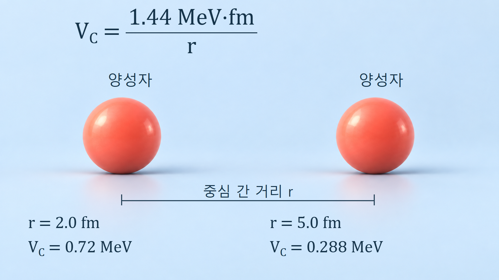
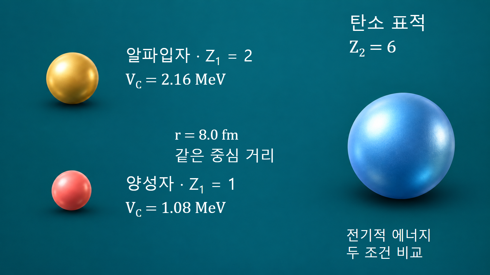

원자와 원자핵의 기초 · 013
쿨롱힘과 핵력의 경쟁
양성자 사이의 장거리 반발과 핵자 사이의 짧고 강한 인력이 만드는 핵 안정성
양성자끼리는 같은 양전하 때문에 밀어내지만, 핵자 사이의 짧은 거리 상호작용은 원자핵을 결합할 수 있게 합니다. 안정성은 어느 힘이 항상 더 센지로 결정되지 않습니다. 거리, 양성자수, 중성자수와 양자상태에 따른 전체 에너지를 함께 살펴야 합니다.
같은 양전하가 모여 있는 원자핵
양성자는 양의 기본전하를 가지므로 양성자 두 개 사이에는 정전기적 반발이 작용합니다. 원자의 전자들은 핵 밖에 분포하며, 핵 내부의 양성자 사이 반발을 없애 주는 접착제가 아닙니다. 핵자를 결합시키는 핵력은 쿼크를 묶는 강한 상호작용에서 비롯된 잔류 상호작용입니다. 양성자·중성자를 구성하는 내부 힘과 핵자 사이의 유효 핵력을 구분하면, 강한 상호작용의 모든 성질을 하나의 고전적인 힘 화살표로 설명하는 오류를 피할 수 있습니다.
쿨롱 퍼텐셜에 담긴 거리와 전하
겹치지 않는 두 구형 핵 또는 점전하를 근사하면 쿨롱 퍼텐셜에너지는 VC=(1.44 MeV·fm)Z1Z2/r입니다. r은 표면 간격이 아니라 두 전하 중심 사이 거리이며 fm으로 넣습니다. 1.44라는 계수는 e²/(4πε₀)를 MeV·fm로 환산한 근삿값입니다. 여기서 계산하는 것은 힘의 크기가 아니라 에너지입니다. 에너지는 1/r에 비례하고, 반발력의 크기는 그 공간 변화율에 따라 1/r²에 비례합니다. 원자 전체의 먼 거리에서는 전자에 의한 차폐를 고려해야 하므로 이 식을 중성 원자 사이에 그대로 적용하지 않습니다.
두 양성자 사이 거리의 수치 비교
양성자 두 개의 중심 간 거리를 2.0 fm로 가정하면 Z1=Z2=1이므로 VC=1.44/2.0=0.72 MeV입니다. 거리가 5.0 fm로 증가하면 1.44/5.0=0.288 MeV로 낮아집니다. 두 번째 값은 첫 번째의 0.4배이지만 힘의 비율은 (2/5)²=0.16입니다. 같은 거리 변화라도 퍼텐셜에너지와 힘의 감소 비율이 다름을 확인할 수 있습니다. 이 계산은 전기적 기여만 분리한 것이며, 2 fm에서의 전체 양성자 상호작용이나 두 양성자의 결합 여부를 판정하지 않습니다.

핵력의 짧은 범위와 가까운 이웃
핵자 사이의 인력은 대체로 수 fm 이내에서 중요하며, 아주 짧은 거리에서는 단순한 인력만으로 설명할 수 없는 반발 성분이 나타납니다. 또한 스핀과 상대 운동 상태에 따라 작용이 달라집니다. 핵자가 하나 늘어났을 때 모든 기존 핵자와 같은 세기로 결합하는 것이 아니라 주로 가까운 이웃의 영향을 받는 성질을 포화성이라고 설명합니다. 따라서 핵력은 핵자 수와 함께 무한히 커지는 장거리 접착제가 아닙니다. 양성자쌍의 전기적 반발은 더 먼 핵자 사이에도 누적되므로 무거운 핵에서는 두 효과의 비중이 달라집니다.
| 비교 | 쿨롱 상호작용 | 핵자 사이 핵력 |
|---|---|---|
| 주된 조건 | 전하량과 중심 간 거리 | 거리·스핀·상대 운동 상태 |
| 핵 크기에서의 범위 | 핵 전체에 걸친 양성자 반발 | 가까운 이웃과의 상호작용 |
| 모형의 한계 | 전하분포 겹침·전자 차폐 구분 | 매우 짧은 거리의 반발 성분 포함 |
중성자가 늘어도 안정성이 무한히 커지지 않는 이유
중성자는 순전하가 없으므로 양성자를 추가할 때와 같은 직접적인 쿨롱 반발 증가 없이 핵 결합에 참여합니다. 이것이 무거운 안정핵에서 중성자가 양성자보다 많은 경향을 이해하는 한 가지 이유입니다. 그러나 중성자는 양성자의 양전하를 상쇄하지 않으며, 너무 많은 중성자는 양성자와 중성자 상태 점유의 불균형에 따른 에너지 비용을 높입니다. 안정 조성은 이 비용과 결합·껍질 효과를 함께 반영합니다. 따라서 중성자를 더하면 어떤 핵이든 안정해진다는 결론은 성립하지 않습니다.
같은 표적에 접근하는 양성자와 알파입자
탄소핵의 Z2=6과 중심 간 거리 r=8.0 fm를 고정한 비교를 생각합니다. 입사 양성자의 Z1=1이면 쿨롱 에너지는 1.44×6/8=1.08 MeV입니다. 알파입자는 Z1=2이므로 같은 거리에서 2.16 MeV가 됩니다. 알파입자의 질량이 더 커서가 아니라 전하량이 두 배이기 때문에 이 전기적 항이 두 배입니다. 두 값은 특정 거리의 퍼텐셜에너지이며 실제 반응의 문턱에너지나 단면적을 뜻하지 않습니다. 입사 에너지를 비교할 때에는 실험실계와 질량중심계도 구분해야 합니다.

핵융합의 접근 장벽과 핵분열의 변형
핵융합에서는 양전하를 띤 두 핵이 가까워질수록 쿨롱 퍼텐셜이 커지지만, 충분히 가까운 영역에서는 핵력이 반응에 관여합니다. 양자 터널링 때문에 입사 에너지가 고전적인 장벽 높이보다 낮아도 반응 확률이 완전히 0이 되지는 않습니다. 핵분열에서는 하나의 핵이 길어지고 목이 생길 때 표면에너지 증가와 쿨롱에너지 감소가 경쟁합니다. 같은 힘을 다루지만 접근 거리의 변화와 핵 형태의 변화라는 서로 다른 문제이므로 두 장벽을 같은 숫자로 취급하지 않습니다.
힘의 비교를 실제 계산에 연결하는 방법
쿨롱식은 전하와 거리 변화의 방향을 검산하는 데 유용합니다. 실제 핵종의 안정성은 질량과 분리에너지, 붕괴 Q값 및 양자상태 자료로 확인하며, 반응률은 에너지별 단면적과 입사입자 분포를 사용해 계산합니다. 핵력은 항상 인력이라는 가정, 중성자가 전하를 상쇄한다는 비유, 퍼텐셜에너지를 그대로 반응 문턱으로 사용하는 계산을 피해야 합니다. 무엇을 고정하고 어느 항만 비교했는지 분명히 할 때 두 힘의 경쟁을 원자로·핵반응 해석에 올바르게 연결할 수 있습니다.